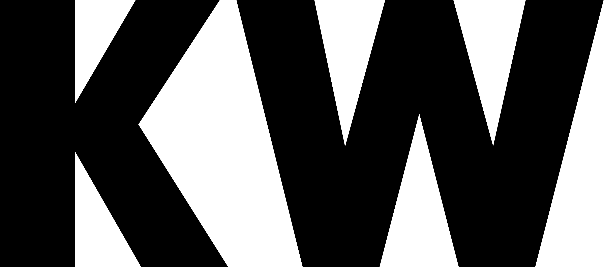

Nell Steinmetz
Student and aspiring UX designer.
KW Rebranding
As an assignment for a digital design course, Anamaria Silic and I rebranded the KW Museum for Contemporary Art in Berlin, Germany to make it appeal to Gen Z.
KW is a contemporary art museum without a permanent collection. It was founded in the early 1990s by Klaus Biesenbach and was formerly a margarine factory. KW attempts to address central questions of our time through contemporary art. After visiting KW, it was clear that the target audience is around 40+ years old. The art is very hard to understand from a younger standpoint, especially if one went into the museum with no prior knowledge of the issues being addressed.
KW's current logo is very simple and minimalistic, giving off the right messages that reflect the ideals of their museum. However, in order to approach a more Gen Z audience, we decided to completely redo the museum fresh. We came up with the idea of aus, which means 'out' in German. Aus is a dynamic space in which visitors are immersed in hypersensual displays of groundbreaking art forms. We want to create a technology based art institute which would present high tech art forms. Instead of celebrating the old, we want to celebrate the new, and use modern inventions to create an idiosyncratic art experience where modern machines promote social issue awareness through full immersive art exhibitions that develop both wonder and empathy in gallery visitors.
Logo Process


To see the final brandbook, click here